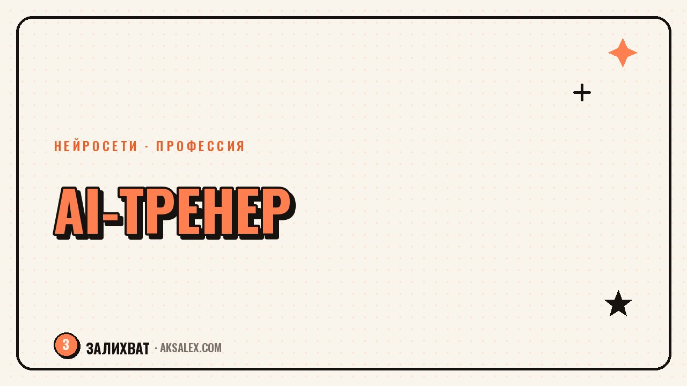

Кто такой AI-тренер и как на этом зарабатывают

Нейросети умеют писать тексты, собирать таблицы и рисовать картинки, но большинству людей до сих пор непонятно, как с этим работать на практике. Из этого разрыва выросла новая профессия - AI-тренер: человек, который объясняет другим, как пользоваться нейросетями под их конкретные задачи, и получает за это деньги. Разберём, что это за роль на деле, какие форматы заработка реально работают и с чего начать, если ты уже обращаешься с ChatGPT или другими инструментами лучше среднего пользователя.
Кто такой AI-тренер и что он делает
Термин «AI-тренер» ещё не устоялся, поэтому под ним скрывается несколько разных ролей. Иногда это человек, который проводит отдельные консультации для предпринимателей: показывает, как настроить нейросеть под конкретную задачу - от обработки заявок до сборки контент-плана на месяц. Иногда это автор небольшого курса или наставник, который ведёт группу учеников несколько недель подряд и доводит их до самостоятельной работы с инструментами.
Объединяет все эти форматы одно: AI-тренер не разрабатывает нейросети и не пишет для них код. Его работа - перевести возможности готовых инструментов на язык задач конкретного человека или компании. Бухгалтеру нужно одно, маркетологу - другое, а предпринимателю без штата сотрудников - третье. Хороший AI-тренер умеет быстро понять, что болит у ученика, и подобрать под это рабочую связку инструментов и промптов, а не читать общую лекцию про «возможности искусственного интеллекта».
Чем AI-тренер отличается от блогера про нейросети
Блогер про нейросети делает контент на широкую аудиторию: статьи, видео, посты с обзорами сервисов. AI-тренер работает точечно - с конкретным человеком или группой, разбирает их реальные задачи и доводит до результата в рамках оплаченной сессии или курса. Это разные навыки: блогеру важно удерживать внимание большой аудитории, тренеру - объяснять, слушать и доводить ученика до рабочего результата за ограниченное время.
Какие форматы заработка доступны новичку
Начинать не обязательно с курса на сотню учеников - это и сложно организационно, и рискованно, если своя методика ещё не проверена. Разумнее двигаться от простого к сложному и опробовать несколько форматов, прежде чем вкладываться в один из них всерьез.
- Разовые консультации - один-два часа, разбор конкретной задачи клиента и подбор инструментов
- Мини-курс или марафон - несколько встреч на одну тему, например «нейросети для документов за неделю»
- Корпоративное обучение - занятие или серия занятий для команды компании под её процессы
- Сопровождение на абонентской основе - помогаешь внедрять нейросети в рабочие процессы на регулярной основе
- Платные материалы - шаблоны промптов, чек-листы, гайды по конкретным сценариям использования
| Формат | Что входит | Кому подходит на старте |
|---|---|---|
| Разовая консультация | Созвон, разбор задачи, подбор инструментов и промптов | Новичку без аудитории - проще всего начать |
| Мини-курс / марафон | Несколько занятий, домашние задания, проверка результатов | Тому, кто уже провёл несколько консультаций |
| Корпоративное обучение | Встреча или серия встреч под процессы одной компании | Тому, у кого есть кейсы и рекомендации |
| Сопровождение на абонементе | Регулярные встречи, ответы на вопросы, донастройка связок | Тому, кто готов вести долгосрочные отношения с клиентом |
| Платные материалы | Шаблоны промптов, гайды, подборки инструментов | Тому, у кого уже есть небольшая аудитория |
Какие навыки нужны, чтобы начать
Техническая часть здесь не самая сложная - большинство популярных нейросетей разобраны в десятках бесплатных статей и видео, и освоить их на уровне «уверенного пользователя» можно за несколько недель практики. Сложнее со второй частью - умением объяснять и выстраивать занятие так, чтобы человек не растерялся, а довёл дело до результата.
Техническая база
- Уверенное владение хотя бы одной текстовой нейросетью и умение писать развёрнутые промпты
- Опыт работы с нейросетями для изображений и базовое понимание их ограничений
- Знакомство с нейросетями для таблиц, презентаций или документов - то, что чаще всего нужно бизнесу
- Понимание, где нейросеть ошибается и как это проверять, а не слепая вера в любой её ответ
Навыки преподавания
Важно уметь объяснять без терминов, которые понятны только тебе самому, и держать структуру занятия: что человек должен уметь делать руками к концу встречи. Полезно заранее готовить короткие практические задания - ученик должен успеть сделать хотя бы один рабочий результат своими руками во время занятия, а не просто посмотреть, как это делаешь ты.
Сколько можно заработать и от чего это зависит
Точную цифру дохода здесь никто честно не назовёт - слишком сильно он зависит от формата, региона, личного бренда и того, насколько узко ты специализируешься. Консультация для частного человека и занятие для отдела продаж в компании - это разная работа, разная ответственность и разная цена.
Сильнее всего на доход влияют три вещи: насколько узко ты закрываешь конкретную боль клиента (широкое «научу пользоваться нейросетями» продаётся хуже, чем «настрою нейросеть для обработки заявок в твоём отделе продаж»), сколько у тебя готовых кейсов и отзывов, и в каком формате ты работаешь - разовые консультации дают быстрый, но нерегулярный доход, а сопровождение на абонементе даёт предсказуемость.
Платят не за знание нейросетей, а за решённую проблему конкретного человека. Чем точнее ты формулируешь, чью боль закрываешь, тем проще объяснить, за что берёшь деньги.
Как сделать первые шаги за месяц
Начать можно без вложений в рекламу и сложную упаковку - первых клиентов почти всегда находят через знакомых и небольшую активность в соцсетях, а не через холодный трафик.
- Неделя 1: выбери одну узкую тему - не «нейросети вообще», а конкретный сценарий, например «нейросети для ответов клиентам в директе»
- Неделя 1-2: проведи три-пять бесплатных или символических консультаций для знакомых, чтобы обкатать формат и собрать первую обратную связь
- Неделя 2-3: оформи один короткий кейс по итогам этих консультаций - что было у человека до и что получилось после
- Неделя 3: назначь цену за следующие консультации, опираясь на то, сколько времени и сил реально уходит на подготовку и проведение
- Неделя 4: расскажи о формате в своих соцсетях или попроси знакомых порекомендовать тебя дальше
Где брать первых клиентов
Проще всего начать с собственного круга: коллеги, предприниматели-знакомые, участники тематических чатов, где ты уже состоишь. Второй рабочий канал - профильные сообщества по нейросетям, где люди сами спрашивают, где найти помощь с настройкой. Холодная реклама на старте почти всегда даёт мало отдачи, потому что нет ни одного подтверждённого результата, на который можно сослаться.
Частые ошибки новичков в этой нише
Большинство провалов на старте связаны не с нехваткой знаний о нейросетях, а с тем, как построена сама работа с клиентом.
- Пытаться научить «всему про нейросети сразу» вместо одной конкретной задачи, которая реально болит у клиента
- Строить занятие как лекцию, а не как практику с результатом в руках ученика к концу встречи
- Называть цену ниже затраченного времени из-за страха показаться дорогим новичком
- Не фиксировать результаты учеников, из-за чего потом не из чего собрать кейсы и отзывы
- Обещать то, что нейросеть не умеет делать стабильно, и терять доверие клиента после первого же сбоя
Частые вопросы
Нужно ли образование в IT, чтобы стать AI-тренером?
Нет, формальное IT-образование не обязательно. Важнее практический опыт работы с нейросетями и умение объяснять его другим простыми словами. Многие успешные тренеры пришли из маркетинга, образования или малого бизнеса.
Сколько времени нужно, чтобы начать зарабатывать на обучении нейросетям?
Первые оплачиваемые консультации реальны уже через месяц активной практики, если выбрать узкую тему и начать с круга знакомых. Стабильный поток клиентов обычно выстраивается дольше - через кейсы и рекомендации.
Чем AI-тренер отличается от промт-инженера?
Промт-инженер в основном работает с настройкой и тестированием промптов внутри компании или продукта. AI-тренер в первую очередь учит других людей пользоваться нейросетями самостоятельно, его результат - это навык у ученика, а не готовый промпт.
Можно ли совмещать это с основной работой?
Да, большинство начинают именно так: берут одну-две консультации в неделю в свободное время, не бросая основную занятость. Это снижает риск и даёт возможность спокойно обкатать формат перед тем, как переходить на это полностью.
Какую нейросеть лучше всего знать для старта в этой нише?
Нет одной правильной нейросети - важнее глубоко разобраться в одном-двух инструментах под конкретную задачу, которую ты собираешься закрывать клиентам, чем поверхностно знать десять сервисов сразу.
Раз тема оказалась полезной, вот что почитать следующим. Какие нейросети на русском работают без VPN бесплатно: тексты, картинки, голос, видео.
Читать статью →а не вручную